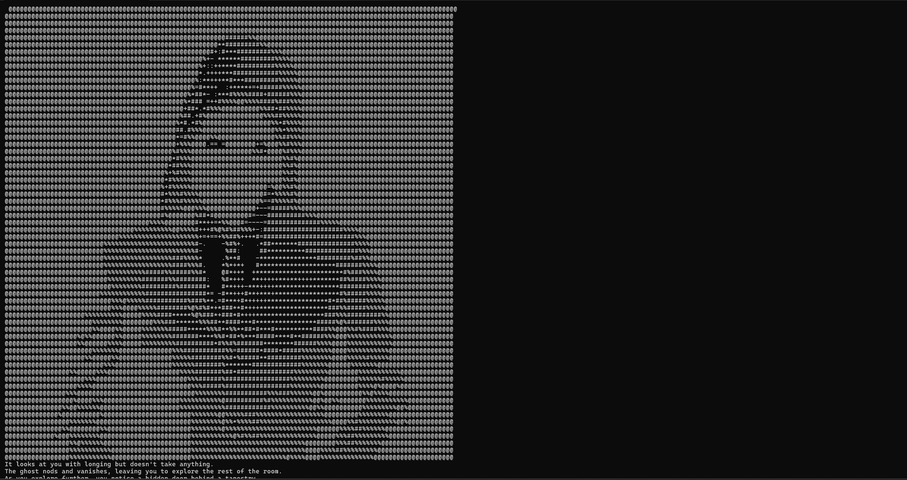
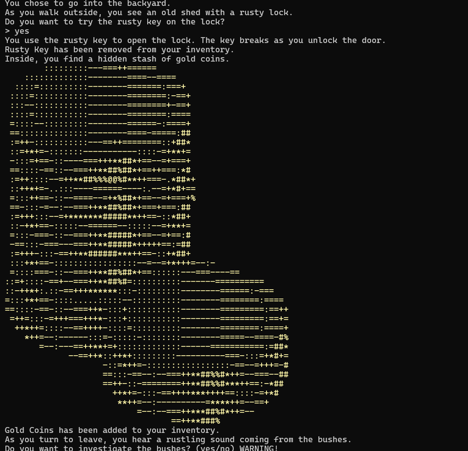
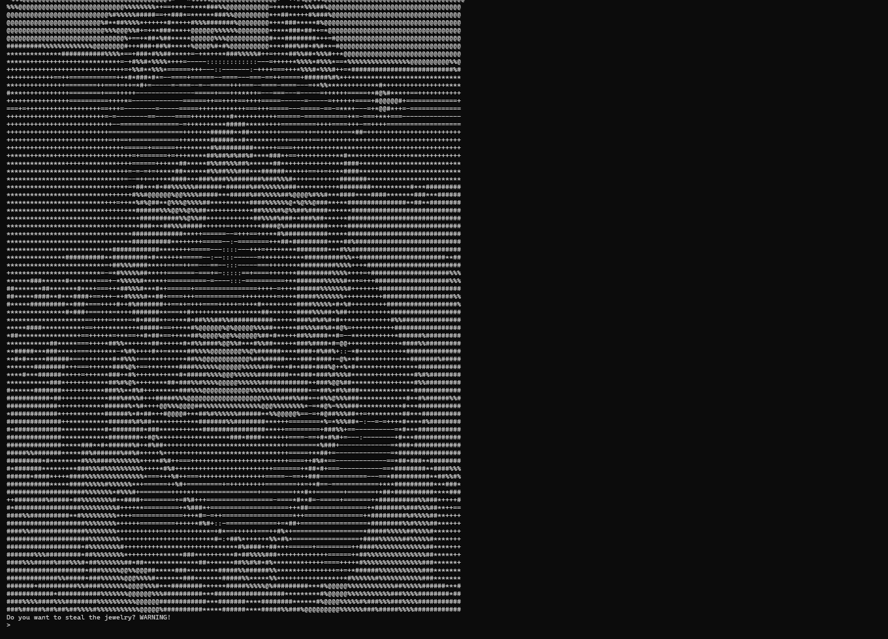
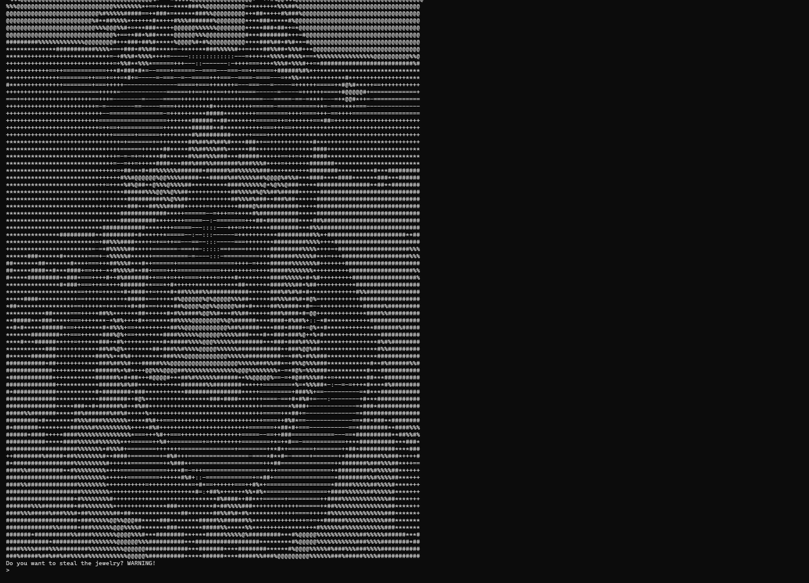
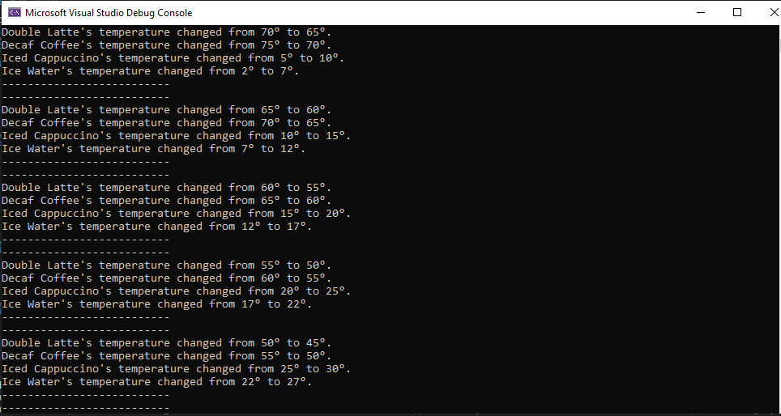

About Me
Hello! I'm Tyler Hitchcock, a student at Columbia College Chicago. Welcome to my portfolio where you can find information about my projects and skills.
My Projects
-
 House of Horror - This was the project I did for my midterm. The player inherits an old, spooky mansion from a distant relative and must explore it, interacting with various rooms, collecting items, and avoiding dangers. The primary goal is to escape the mansion with valuable items like gold jewelry and coins. However, there's a secret goal: to cleanse the house of ghosts.
House of Horror - This was the project I did for my midterm. The player inherits an old, spooky mansion from a distant relative and must explore it, interacting with various rooms, collecting items, and avoiding dangers. The primary goal is to escape the mansion with valuable items like gold jewelry and coins. However, there's a secret goal: to cleanse the house of ghosts.
  

-
House of Horrorv2 - The sequel to House of Horror, with more rooms, items, and challenges.

-
ExporableAreasConsoleDemo - A demo that lets you explore a map we designed in class.
-
WeatherApp - A weather application that provides current weather information for your location.

-
Coffe - A game that tells you the temperature of the drinks over a few seconds.

Contact Me
You can reach me at typryorhitchcock1@gmail.com